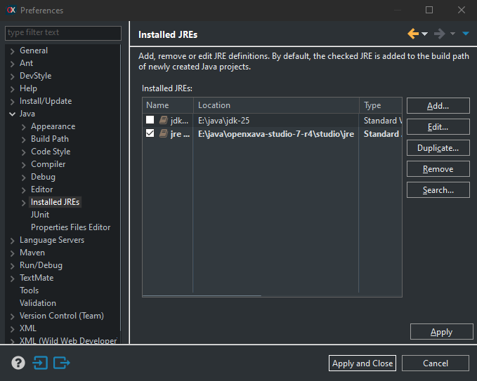
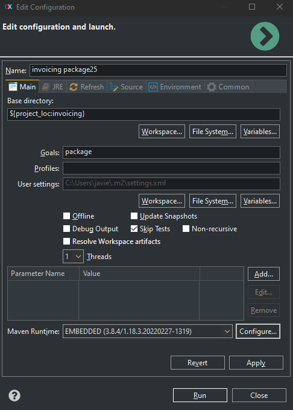
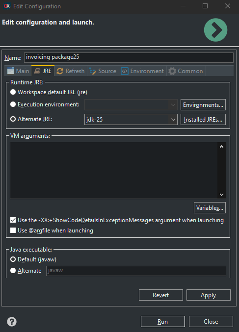
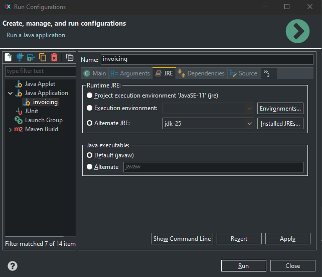

By default, OpenXava is compiled with Java 8, so you can use OpenXava with
Java 8, 11, 17 or 21. Moroever, since v7.6 OpenXava supports Java 25,
therefore you can compile and run your OpenXava applications with Java 25
and enjoy their new features.
To use Java 25 in your application
you have to change the compile level in the pom.xml of your
project, thus:
<maven.compiler.source>25</maven.compiler.source>
<maven.compiler.target>25</maven.compiler.target>
For Java 25 to recognize Lombok annotations you must add the following
plugin in the build section of your project's pom.xml:
<build>
<finalName>${artifactId}</finalName>
<plugins>
<!-- For Java 25. Be sure to specify the same Lombok version you are using. -->
<plugin>
<groupId>org.apache.maven.plugins</groupId>
<artifactId>maven-compiler-plugin</artifactId>
<version>3.12.0</version>
<configuration>
<source>${maven.compiler.source}</source>
<target>${maven.compiler.target}</target>
<encoding>${project.build.sourceEncoding}</encoding>
<annotationProcessorPaths>
<path>
<groupId>org.projectlombok</groupId>
<artifactId>lombok</artifactId>
<version>1.18.40</version>
</path>
</annotationProcessorPaths>
</configuration>
</plugin>
...
</plugins>
</build>
This is required even if the compilation level is not 25. The Lombok version
you specify must be the same one your project is using, usually the one
used by the OpenXava version. That’s why if you change your OpenXava version
you may need to adjust the Lombok version here. In projects created from v7.6 onwards, this
plugin is included by default in the pom.xml, although commented out.
The below instructions are for
configuring OpenXava Studio to use Java 25. Obviously, you should have JDK
25 installed on your computer.
Add Java 25 to OpenXava Studio
The first step is to indicate to
OpenXava Studio where the JDK 25 is installed. For that, go to Window
> Preferences > Java > Installed JREs, and there add the
JDK 25 to the Installed JREs list:
It's not needed that you mark it
as the defaul JRE.
Configure to compile with Java 25
You should define your own Maven
configuration to compile, package or install your application and indicate
in that configuration that you're going to use Java 25. Use that
configuration for compile or package your application. That is, do a right
mouse click on your project, and choose Run As > Maven build...,
then in the dialog create a configuration to call the goal package
and named it yourproject package25 (for example), in this way:

The go to the JRE tab and in Alternate
JRE option, choose the JDK 25 as JRE, thus:

Now click on Run and your
application will be compiled and packaged using Java 25. From now on, you
can use the package25 configuration you have created to compile
with Java 25.
Configure to run with Java 25
You have to edit your run
configuration to use the JDK 25 to run your application. For that click on
the Run Configuration... menu entry:

Choose your application on the
right, on the Java Application section. Then go to the JRE tab and in Alternate
JRE choose the JDK 25, like this:

Click on Run, and your
application will run using Java 25.
Note: Beware, because if you do a
Maven > Upgrade Project on your project at any moment, your
project will be marked with errors. Don't panic, just do a right click on
your project, and choose Properties > Java Build Path >
Libraries. There remove the Java 18 JRE library and add the Java 25
library, with the Add Library... button.